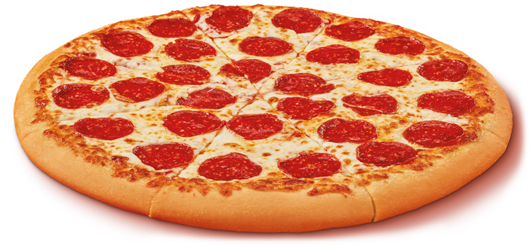

Pizza

pepperoni is one of the most popular pizza toppings.
Mixed with the melting cheese an sauce
Perfection
easy to follow an baic ingredients for a delicious at home
pepperoni pizza in these 6 steps.
Ingredients
pizza sauce {home made or store bought}
pizza dough {home made or store bought}
mozzarella or other cheese
pepperoni
Steps
- pre heat oven to 350-400
- Roll the dough out to desired form
- Apply sauce
- Apply cheese
- Apply pepperoni
- place in oven for 25-30 minutes or until crust is lightly brown
return to main page